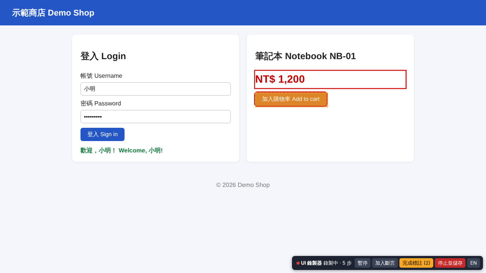
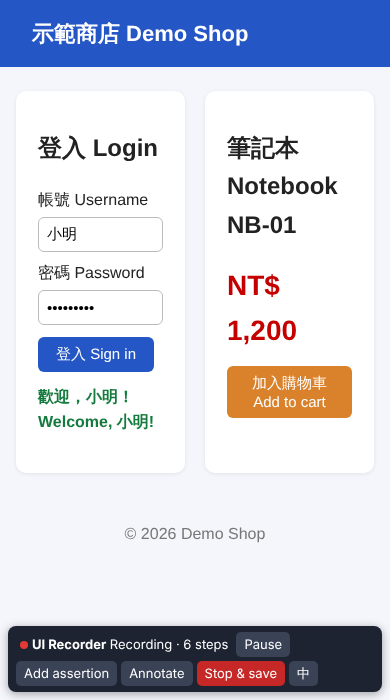

概覽
手寫 UI 驗證情境很花時間：要查每個元素的選擇器、記得每一步的順序。ui-recorder 讓你在有視窗的 Chromium 裡實際操作一次，它會把點擊、輸入、按 Enter、換頁錄成 01-mcp-ui-verifier 的情境格式（open / click / fill / press / assert_text / assert_visible / screenshot_annotate），存檔後可以不修改直接交給 01 的 run 重播。
- 頁面右下角有浮動工具列（預設中文，可切 English）：開始/暫停、加入斷言、截圖標註、停止並儲存。工具列本身的點擊不會被錄進去。
- 密碼欄位會標記
"secret": true（01 的報告會遮罩），日誌裡一律寫成******。 - 選擇器依序嘗試
#id→[data-testid]→[name]→ 角色＋可及名稱 →text=→ 短 CSS 路徑，並用 Playwright 在頁面上確認只對應一個元素（見選擇器策略）。 - 也能以程式驅動：
record --script steps.js或 APIstartRecorder(page)，方便寫自動測試。

檔案結構
13-ui-recorder/
src/cli.js CLI 進入點（record）
src/recorder.js Node 端：exposeBinding、事件 → 情境步驟、選擇器驗證（startRecorder API）
src/injected.js 注入頁面的錄製腳本與工具列（Shadow DOM）
src/validate.js 載入 01 的 validateScenario（找不到時用相同規則的本地版本）
src/i18n.js zh-TW / en 文字
src/logger.js JSONL 日誌
src/config.js 參數、輸出路徑、載入 Playwright
scripts/record-demo.js 啟動 01 示範網站並錄製
test/ node:test 測試（含端到端：錄製 → 01 驗證 → 01 重播）
examples/ 範例截圖與 demo-recorded.json
ui-recorder.ps1, *.bat Windows 啟動器與 01-mcp-ui-verifier 的關係
輸出格式由 01 定義。ui-recorder 執行時會嘗試載入 ../01-mcp-ui-verifier/src/scenario.js 的 validateScenario 檢查輸出；若 01 不存在則使用 src/validate.js 內相同規則的副本。測試（npm test）一定需要 01：用它的示範網站、它的 validateScenario，並用它的 CLI 重播。
快速開始
需求：Node.js 20 以上；Playwright 與 Chromium（全域安裝，或已執行過 01 的 setup，ui-recorder 會使用 01 的 node_modules）。本專案沒有 npm 相依套件，不需要 npm install。
Windows
- 雙擊
setup.bat：檢查 Node.js 與 Playwright。
預期：顯示Playwright OK、exit code: 0。 - 雙擊
record-demo.bat：啟動 01 的示範商店（http://127.0.0.1:4173/）並開啟有視窗的 Chromium。
預期：右下角出現「UI 錄製器 錄製中 · 1 步」工具列。 - 在頁面上操作，最後按「停止並儲存」。
預期：命令視窗顯示「已儲存情境（N 個步驟）」與檔案路徑（預設%ProgramData%\NewMiscCode\13-ui-recorder\scenarios\demo-recorded.json）。 - 錄自己的網站：在命令提示字元執行
record.bat http://localhost:5000/ --out my.json。 - 執行測試：雙擊
run-tests.bat。預期：# fail 0。
鏈結：.bat（純 ASCII、CRLF，pushd "%~dp0"，顯示路徑與結束代碼，結束前 pause）→ ui-recorder.ps1（UTF-8 BOM）→ node。設定環境變數 UIREC_NO_PAUSE=1 可略過 pause。
Linux / macOS
cd 13-ui-recorder
npm test # 9 個測試，需要 ../01-mcp-ui-verifier
npm run record:demo # 啟動 01 示範網站並錄製（需要圖形介面）
node src/cli.js record http://localhost:5000/ --out my.json
node ../01-mcp-ui-verifier/src/cli.js run my.json # 用 01 重播沒有桌面環境（CI、SSH）時可用 xvfb-run -a node src/cli.js record ...，或改用腳本模式（無頭）。
使用說明
命令列
node src/cli.js record <url> [選項]| 選項 | 說明 |
|---|---|
--out file.json | 輸出檔。未指定時存到 <輸出資料夾>/scenarios/<name>-<時間>.json |
--name 名稱 | 情境名稱（預設 recorded-<host>） |
--lang zh-TW|en | CLI 與工具列語言（工具列可隨時切換） |
--script steps.js | 以腳本驅動頁面（預設無頭；加 --headed 顯示視窗） |
--check-console | 在情境最後加上 check_console_errors |
--debounce 400 | 輸入合併時間（毫秒），停止打字這麼久後才記錄 fill |
--debug | 日誌層級 debug，並把日誌同步印到 stderr |
結束代碼：0 已儲存；2 參數錯誤或執行失敗。
工具列
| 按鈕 | 作用 | 產生的步驟 |
|---|---|---|
| 暫停 / 開始 | 暫停時的操作與換頁都不記錄 | 無 |
| 加入斷言 | 下一次點擊不會真的點下去，而是選取元素 | 有文字 → assert_text（目前文字，最多 100 字，包含比對）；沒有文字或是輸入框 → assert_visible |
| 截圖標註 | 之後點選的元素都加紅框；再按一次「完成標註 (N)」 | screenshot_annotate（selectors + labels） |
| 停止並儲存 | 送出尚未記錄的輸入並存檔；關閉瀏覽器視窗效果相同 | — |
| EN / 中 | 切換工具列語言，換頁後仍保留 | 無 |
會錄到什麼
- open：第一個頁面，以及「不是由點擊/Enter 造成」的換頁（例如在網址列輸入）。同網域時寫相對路徑，
baseUrl另外存，可用 01 的--base-url換環境。 - click：按鈕、連結、核取方塊等。點進文字輸入框只是聚焦，不記錄；點
<label>只記錄它控制的元素一次。 - fill：文字類輸入框與 textarea；連續輸入合併成一步；密碼欄位加
"secret": true。 - press：在輸入框按 Enter（輸入法選字的 Enter 不算）。Enter 觸發的表單送出不會再多記一個 click。
腳本模式與 API
// steps.js
export default async function ({ page, recorder }) {
await page.fill('#username', '小明');
await page.click('#login-btn');
await page.click('[data-uirec-act=assert]'); // 工具列：加入斷言
await page.click('#login-msg');
await recorder.flush();
}node src/cli.js record http://127.0.0.1:4173/ --script test/fixtures/demo-steps.js --out out.jsonimport { startRecorder } from './src/recorder.js';
const rec = await startRecorder(page, { lang: 'zh-TW' }); // 在 page.goto 之前呼叫
await page.goto(url);
// ……用 Playwright 操作……
const scenario = await rec.stop(); // 或 await rec.waitForStop()（使用者按停止）工具列按鈕可用 [data-uirec-act=toggle|assert|annotate|stop|lang] 點擊（Playwright 會穿透 open Shadow DOM）。
逐步驗證指南
以下每一步都有預期結果；全部在 Linux（Node 22.23.4、Playwright 1.63.0）實際跑過。
步驟 1：自動測試
npm test預期：# tests 9、# pass 9、# fail 0。其中端到端測試會：啟動 01 的示範網站 → 用 Playwright 操作並同時錄製（切換語言、暫停時點擊、輸入中文帳號「小明」、密碼、登入、用工具列加斷言、截圖標註）→ 檢查產生的步驟、工具列點擊沒有被錄到、頁面沒有 console 錯誤、390px 寬沒有水平捲動 → 用 01 的 validateScenario 檢查 → 用 01 的 CLI 重播，結束代碼必須是 0。
步驟 2：看範例輸出
打開 examples/demo-recorded.json（由測試產生）。預期 6 個步驟：open /、fill #username 小明、fill #password（secret: true）、click #login-btn、assert_text #login-msg 歡迎，小明！…、screenshot_annotate #price, #add-to-cart。
步驟 3：用 01 重播範例
node ../01-mcp-ui-verifier/src/cli.js serve-demo --port 4173 # 另開一個視窗
node ../01-mcp-ui-verifier/src/cli.js run examples/demo-recorded.json預期：6 個步驟都「通過」，最後一行 完成：6 通過 / 0 失敗，結束代碼 0，並產生 01 的 HTML 報告（含標註截圖）。
步驟 4：親手錄一次
- 執行
npm run record:demo（Windows：record-demo.bat）。預期：Chromium 開啟示範商店，右下角工具列顯示「錄製中 · 1 步」。 - 帳號輸入「小明」、密碼任意，按「登入 Sign in」。預期：工具列步數變成 4。
- 按「加入斷言」，再點綠色的歡迎訊息。預期：按鈕先變成黃色「點選要斷言的元素…」，點完恢復，步數 +1，網頁本身沒有反應。
- 按「截圖標註」，點價格與「加入購物車」。預期：兩個元素加上紅框，按鈕顯示「完成標註 (2)」；購物車按鈕的程式不會被觸發。再按一次結束標註。
- 按「EN」。預期：工具列變成英文（如下圖，手機寬度時自動換行）。
- 按「停止並儲存」。預期：工具列顯示「已儲存」，命令視窗印出檔案路徑與重播指令。

步驟 5：文件與編碼檢查
node ../tools/audit-text.mjs .
node ../tools/check-docs.mjs --no-browser預期：problems=0。
開發者指南
架構
Node (src/recorder.js) 頁面 (src/injected.js, addInitScript)
page.exposeBinding('__uirecEmit') <------ click / input / change / keydown（window 捕獲階段）
page.exposeBinding('__uirecState') <-----> 暫停、語言（換頁後由 Node 取回）
page.exposeBinding('__uirecStop') <------ 工具列「停止並儲存」
page.on('framenavigated') -> open 步驟
事件佇列（依序處理）-> 選擇器驗證 -> steps[] -> scenario()- 頁面腳本以
Function.prototype.toString序列化後注入，每次換頁自動重跑；只在主框架（top）執行。 - 工具列放在
<div id="__uirec_root">的 open Shadow DOM 裡，掛在<html>下而不是<body>，所以不影響頁面的nth-of-type。所有監聽器先檢查event.composedPath()是否包含工具列，是就忽略。 - 斷言/標註模式下在捕獲階段
preventDefault+stopImmediatePropagation（click、mousedown、pointerdown、submit…），網頁本身收不到點擊。 - Node 端所有事件經過一個 Promise 佇列依序處理，保證步驟順序與頁面發生順序一致；
flush()會先送出頁面裡尚未到時的 debounce 輸入。
選擇器策略
#id（排除看起來是自動產生的 id：數字開頭、含 4 位以上數字、含冒號、react/ember 等前綴）[data-testid="…"]（也接受 data-test-id、data-test、data-cy）tag[name="…"]role=button[name="…"]（簡化版 ARIA：aria-label、aria-labelledby、label、alt、placeholder、按鈕/連結/標題文字）text="…"（40 字以內的元素文字，完整比對）- 短 CSS 路徑：往上走到有穩定 id 的祖先為止，使用 class 與必要時的
:nth-of-type()，一旦唯一就停止
頁面端產生候選清單並先估計唯一性；Node 端再用 page.locator(sel).count() 逐一驗證，選第一個剛好對應 1 個元素的。若頁面已換頁無法驗證（例如點連結），使用頁面端估計為唯一的第一個候選。點擊目標會先往上找最近的互動元素（button、a、input、label、[role=button]…）。
如何擴充
- 新的事件類型：在
src/injected.js加監聽器並emit({ type: 'xxx', cands })；在src/recorder.js的_onEvent轉成 01 支援的 action（清單見 01 的ACTIONS）。 - 新的選擇器規則：在
candidates()依優先順序插入{ kind, sel, unique }；Node 端驗證會自動套用。 - 工具列文字：
src/i18n.js的tb.*鍵，兩種語言都要加（單元測試會檢查鍵是否一致）。
版本
| 元件 | 版本 |
|---|---|
| Node.js | 20 以上（測試於 22.23.4） |
| Playwright | 1.63.0（全域，或 01 的 node_modules） |
| Chromium | Playwright 內建（測試於 153） |
| npm 相依套件 | 無 |
變更紀錄
- 0.1.0（2026-11-05）：第一版。record CLI、工具列（暫停、斷言、標註、停止、語言）、腳本模式、startRecorder API、選擇器驗證、JSONL 日誌、Windows 啟動器、端到端測試（01 驗證＋重播）。
除錯與日誌
- 日誌位置：Windows
%ProgramData%\NewMiscCode\13-ui-recorder\logs\recorder-<時間>.jsonl；Linux./output/logs/。可用環境變數UIREC_OUTPUT_DIR改變輸出根目錄。 - 每行一個 JSON：
{"ts","level","event",…}，層級debug / info / warn / error。--debug（或UIREC_DEBUG=1）啟用 debug 並同步印出；--log-level warn只留警告以上。 - 常見事件：
step.recorded、step.merged、selector.chosen/selector.rejected（含 count）/selector.fallback、nav.skipped、page.console.error、recorder.stopped。 - 密碼欄位的值在日誌中一律是
******（測試會檢查）。
範例（測試用選擇器頁面，兩個按鈕都用了 id="dup"）：
node src/cli.js record http://127.0.0.1:8080/ --debug
[debug] selector.rejected {"sel":"#dup","kind":"id","count":2}
[debug] selector.chosen {"sel":"role=button[name=\"乙 Second\"]","kind":"role","verified":true}限制與疑難排解
已知限制
- 只錄主框架；iframe、彈出視窗（新分頁）內的操作不會記錄。
<select>、檔案上傳、拖放、hover、捲動不會記錄（01 沒有對應的 action）。- 密碼值會以明文存在 JSON（01 重播需要），只在 01 報告與本工具日誌中遮罩；請勿把含真實密碼的情境提交到版本控制。
- 角色/可及名稱是簡化計算，複雜的 ARIA 可能與 Playwright 不同；Node 端驗證失敗時會自動退回下一個候選。
- 斷言使用「包含」比對；動態內容（時間、亂數）請手動改成
"mode": "regex"。 - 點擊造成的換頁在 2 秒內不另外記錄
open；非常慢的轉址可能被誤記為 open（重播時通常無害）。
疑難排解
| 症狀 | 處理 |
|---|---|
| Playwright not found | npm i -g playwright 後 npx playwright install chromium，或先完成 01 的安裝 |
| Linux 沒有視窗 / Missing X server | 使用 xvfb-run -a 或腳本模式（無頭） |
| 看不到工具列 | 頁面有極高 z-index 的遮罩或嚴格 CSP 阻擋 init script；用 --debug 看 inject.failed |
| 重播時找不到元素 | 查日誌 selector.fallback；替元素加 data-testid 後重錄 |
| 測試失敗：找不到 01 | 測試需要同層的 01-mcp-ui-verifier 及其 node_modules |
English
ui-recorder records real browser interactions into a scenario JSON that 01-mcp-ui-verifier runs unchanged.
Quick start
npm test # needs ../01-mcp-ui-verifier
npm run record:demo # record 01's demo shop (headed)
node src/cli.js record http://localhost:5000/ --out my.json [--lang en] [--debug]
node src/cli.js record <url> --script steps.js --out my.json # scripted, headless
node ../01-mcp-ui-verifier/src/cli.js run my.json --base-url http://localhost:5000/Windows: setup.bat, record-demo.bat, record.bat <url> --out my.json, run-tests.bat (chain .bat → ui-recorder.ps1 → node). Output and logs: %ProgramData%\NewMiscCode\13-ui-recorder on Windows, ./output on Linux.
Features
- Records
open,click,fill(debounced; password fields get"secret": true),pressEnter. - Floating toolbar (zh-TW default / English): Start/Pause, Add assertion (
assert_textwith current text, orassert_visible), Annotate (screenshot_annotate), Stop & save. Toolbar clicks are never recorded. - Selector priority:
#id→[data-testid]→[name]→role=…[name="…"]→text=→ short CSS path, each verified to match exactly one element with Playwright. - Programmatic API
startRecorder(page)→flush(),stop(),waitForStop(),scenario(). - Output is checked with 01's own
validateScenario(local copy as fallback). JSONL logs with levels;--debug.
Limitations
Main frame only (no iframes/popups); no select/upload/drag/hover; password values are stored in plain text in the JSON (needed for replay) and masked only in logs and 01 reports; simplified accessible-name computation.